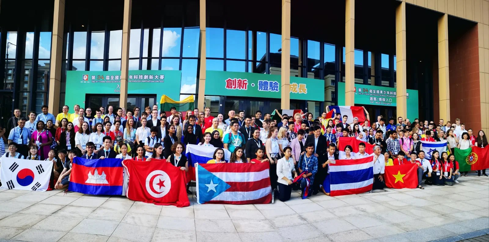

Castic 2019

At just 16 i had the chance to go to chine ,it was june 20th,and after 22 hour flight,i arrived at Macau...alongside other laureats some of which i cannot recall their names, but i remember our supervisor Alaya Bettaib, an old patriotic man eager for scientific exploration . Upon our arrival, we were delighted by the quality of our accommodation provided by the UM, which was the local university there. The following day, we had breakfast and quickly made friends with people from all over the world.I think we Tunisians have a special talent for communication, which makes us easily accepted in international events.
After a strange but delicious breakfast, we went to the Vieterian hotel where the CASTIC fair was being held, A glorious luxurious place that shows that felt very european in style ,we were free to make friends and interact with people from all over the world. the Chinese people live in separate university compartments, we saw it as an opportunity to bond with them. Chinese people are generally reserved around foreigners, but nonetheless we found a common ground to connect with them and have fun together.
On the fourth night, we had a game night where we played several games, including arm wrestling, which was not part of the official program, we connected more with the other nationalities at that night, since we had got our hands on some drinks, The following days, we were more reserved for our scientific projects and the way we will pitch them ,we were very impressed with the fair judging as all international participants received the same number of judges. However, we were disappointed that we didn't receive a schedule for the judges, which meant we had to remain alert at all times in case a judge arrives and we have to pitch the idea immediatly.
On the evening of the next day, we received prizes from Chinese businessmen. Although we were grateful, we couldn't help but notice that most of the prizes were given to Chinese students...The next day was the awards ceremony, and although I was not overly anxious, I was extermely grateful for the friendships i made during the event. They presented us with awards, and it was time for photos.
That night, we felt a mixture of emotions. We enjoyed our stay in Macau and learned a lot about the culture and the people. We wanted to stay longer and bond with our newfound friends, but we knew that all good things must come to an end. It was a great experience, and i hope to go there again.